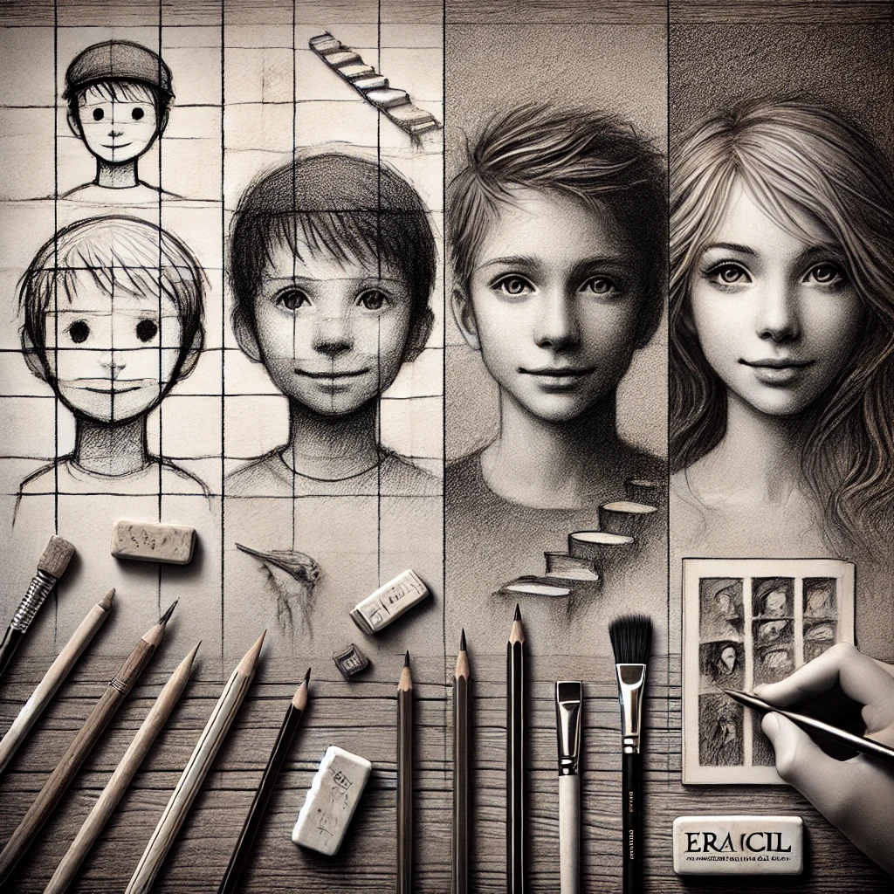
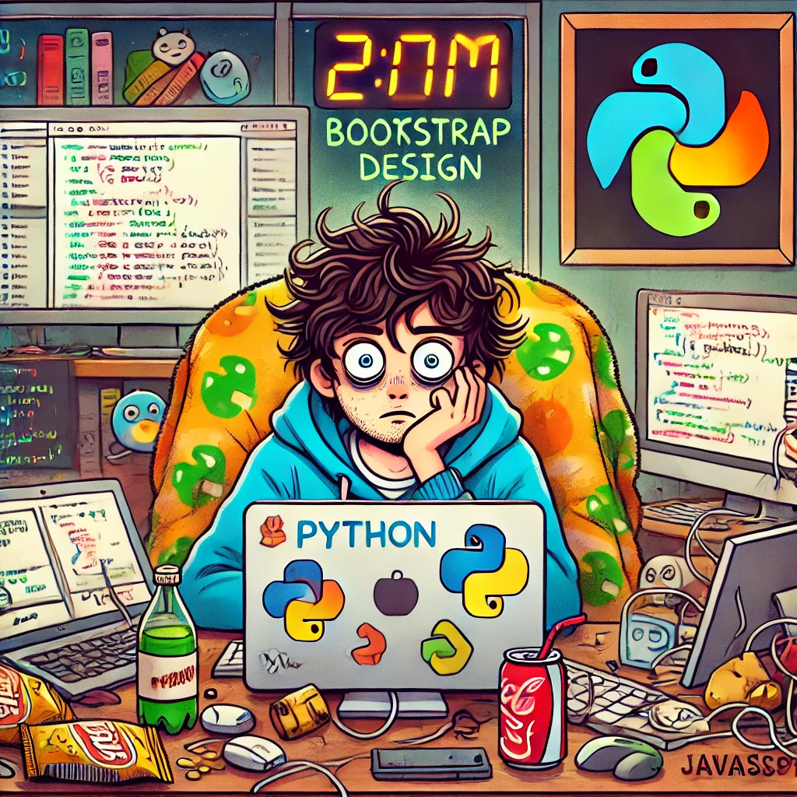

August 15, 2024 | By Shifanth Jasim
I should start by saying that my sister was the one who first helped me with sketching and taught me everything I know about art when I was a little kid. Just like any other kid, I started to sketch at a young age, doodling with stick figures and square houses. Those…
Read More

July 30, 2024 | By Shifanth Jasim
Hey! Today, we will be discussing something that keeps me awake at night — my beloved programming languages! Ugggggh — they’re so much fun and so maddening at the same time, huh? JavaScript First up is JavaScript. Wow, what a ride! He is the wild friend who walks in and flips everything…
Read More
June 20, 2024 | By Shifanth Jasim
Welcome to the whimsical world of artificial intelligence (AI), where machines are learning faster than your cousin learns to steal your fries at a family gathering! In this post, we’ll explore the basics of AI—what it is, how it works, and why you might want to teach your toaster to make…
Read More
May 10, 2024 | By Shifanth M. Jasim
Ah, school life—the glorious years filled with mischief, sports, and a healthy dose of chaos! When I think back to my days at Dharmaraja College Kandy, the biggest Buddhist school in Sri Lanka (and yes, the coolest if you ask me), I can’t help but chuckle. This place wasn’t just about studying; it was a…
Read More